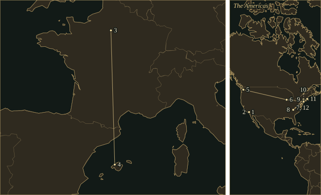
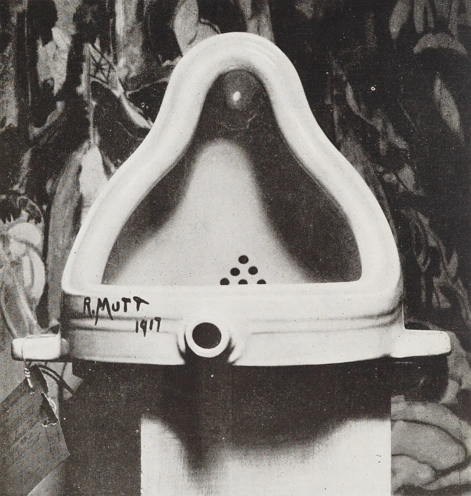

JohnCage
He put bolts between piano strings, composed with chance operations, and gave the sounds around a concert four minutes and thirty-three seconds of their own.
- Trained
- Richard Buhlig · Henry Cowell · Adolph Weiss · Arnold Schoenberg
- Collaborators
- Merce Cunningham, life partner and choreographer · David Tudor, pianist and electronic composer
- At the piano
- Prepared strings · percussion on the closed lid · chance-composed keyboard music
- Alongside music
- Lectures and poems · mushroom study · drawings, prints and watercolours
“My favorite music is the music I haven’t yet heard.”
Life
In Seattle in 1940, Syvilla Fort needed music for her dance Bacchanale. Cage wanted percussion, but the performance space had room for a piano and little else. He put objects between its strings: rubber, screws, bolts, weather-stripping. A key could now answer with a rattle or a muffled knock. The performer still sat at the keyboard; a small percussion orchestra had appeared inside the case. Fort’s practical problem produced the prepared piano.
1912–38California, Europe, a wall
Born in Los Angeles on 5 September 1912, Cage was the son of an inventor and a mother who wrote for the Los Angeles Times. He entered Pomona College in 1928 and left after two years, hoping to become a writer. In Paris he briefly worked for an architect. In Mallorca he painted and composed. At a street corner in Seville, he later recalled, he noticed how many sights and sounds went on together in a single experience, and how much he enjoyed it.
Back in California, Richard Buhlig took an interest in his compositions; Henry Cowell directed him towards further study with Adolph Weiss and Schoenberg. Cage attended Schoenberg’s classes in Los Angeles from 1935. His later account of their disagreement became a favourite story: Schoenberg warned that without a feeling for harmony he would come to a wall. Cage remembered answering, “Then I’ll spend my life knocking my head against that wall.” He kept Schoenberg’s seriousness and found another way to divide a piece.
At the Cornish School in Seattle, where he began teaching and accompanying dance in 1938, lengths of time supplied the divisions. A drumstroke and a silence could occupy the same allotted space. Third Construction (1941) sets four percussionists within a framework of twenty-four groups of twenty-four bars, each player dividing the phrases differently. Tin cans, rattles, drums and a conch shell have places in this carefully counted music. Xenia Kashevaroff, whom Cage married in 1935, played in his percussion ensembles.
1940–48Dance and a small piano
At Cornish he also met Merce Cunningham, who became his life partner and closest collaborator. After a teaching spell in Chicago, Cage and Xenia moved to New York in 1942, initially staying with Peggy Guggenheim and Max Ernst. The marriage ended in divorce in 1945. Cage and Cunningham gave a programme of Cunningham’s solo dances in 1944; their collaboration eventually allowed dance and music to be made independently and brought together in performance. A dancer’s leap could land in the music’s silence.
In New York in 1946, Cage exchanged musical knowledge with the Indian musician Gita Sarabhai. He also read the art historian Ananda K. Coomaraswamy. The Sonatas and Interludes, composed in 1946–48, grew out of his engagement with the permanent emotions of Indian aesthetics and their tendency towards tranquillity. Forty-five piano notes receive preparations. The short pieces include repeated halves, little turning figures and pauses in which a struck string finishes ringing. A screw changes the sound before the pianist has played the first phrase.
Cage and Cunningham visited Black Mountain College in North Carolina in April 1948. That summer Cage returned and organised a festival of Satie, including Le Piège de Méduse. Buckminster Fuller played the Baron; Cunningham danced the mechanical monkey. Cage’s lecture championed Satie against Beethoven, provoking an argument among the college’s musicians. Satie’s small pieces mattered enough to fill an entire summer’s programme. The college’s dining room could serve as a theatre.
1951–58Charts, a pianist, an audience
Christian Wolff gave Cage a copy of the I Ching, the Chinese Book of Changes. In Music of Changes (1951), Cage used its chance operations with charts governing sounds, silences, durations and dynamics. The result demanded formidable precision from David Tudor, its dedicatee. Fingers strike the keyboard, pluck strings and make sounds on the piano’s lid; the pedals have detailed instructions too. Cage had removed his preferences from many decisions, then handed Tudor an exceptionally exacting job.
On 29 August 1952, Tudor performed 4′33″ at the Maverick Concert Hall in Woodstock. Its three movements require the performer to remain silent. The surrounding sounds occupy the time. Cage connected the work with Robert Rauschenberg’s white paintings and with his visit to Harvard’s anechoic chamber, a room designed to suppress reflections of sound. Even there, he reported hearing sounds. Years of writing measured silences had led to a piece in which the pianist contributed no notes at all.
At Black Mountain that same summer, Cage arranged simultaneous activities around an audience: Cunningham danced, Tudor played piano, Rauschenberg played records, and poems were read. The participants remembered the details differently; the conjunction of separate actions survived. In the Concert for Piano and Orchestra (1957–58), that separation reaches the instrumental parts. There is no single coordinating score. An optional conductor moves like a clock, providing time while the players follow their own elaborate instructions.
1954–92Mushrooms, stars and stones
In 1954 Cage moved to the Gate Hill cooperative at Stony Point, north of New York. He studied mushrooms with Guy Nearing and helped found the New York Mycological Society. His New School classes brought experimental music into contact with artists including George Brecht, Dick Higgins and Allan Kaprow; Toshi Ichiyanagi attended in 1958. Meanwhile Tudor became an electronic composer in his own right. Cage’s work travelled through pupils, dancers, performers and their friendships.
In Empty Words (1974), Thoreau’s prose becomes material for a long vocal performance. The voice encounters fragments too small to carry an ordinary sentence. At nearly the same time, Cage made the thirty-two Etudes Australes for Grete Sultan, using a star atlas as his source. These piano studies pursue extreme difficulty. In his autobiographical statement, he explained that such performances could demonstrate that the apparently impossible was possible. The pianist’s labour remained central to his music.
For Ryoanji (1983–85), named after Kyoto’s rock garden, Cage traced portions of stones’ outlines. A flute, oboe, trombone, voice or double bass follows the resulting curves as sliding pitches, above a percussion accompaniment. His drawings and his scores shared the same stones. From Two (1987), late works often carry titles counting their players; flexible time-brackets allow a sound to begin or end within a stated interval. Cage received the Kyoto Prize in 1989 and died in New York on 12 August 1992. The parts leave room for the next performance to meet differently.
Where to hear it
- Sonatas and Interludes1946–48Philipp Vandré, prepared piano · Mode 50 · 1994, Frankfurt
Forty-five prepared notes turn the piano into a roomful of small percussion sounds. Vandré plays a Steinway O; the label’s account explains how the instrument’s string lengths affect the preparations. Sixteen sonatas and four interludes make the most welcoming introduction to Cage’s keyboard music.
- Music of Changes1951Martine Joste, piano · Mode 147
Cage’s chance operations produce four books of precisely written piano music: sharp attacks, silences and sounds made inside the instrument. Joste’s recording places them between Seven Haiku and the Suite for Toy Piano, with the small pieces making the large work’s demands particularly clear.
- Third Construction1941Third Coast Percussion · Mode 243 · June 2011, Boutell Memorial Concert Hall, Northern Illinois University, DeKalb
Four percussionists fit different phrase patterns inside the same twenty-four-bar spans. Tin cans, rattles, drums and conch shell take their turns. Third Coast’s recording couples the piece with the other two Constructions; the filmed edition makes the exchanges between players visible.
- Five · Seven · Thirteen1988–92Essential Music; John Kennedy and Charles Wood, directors · Mode 239 · 1993–94
Essential Music plays Five by blowing into bottles, an instrumental choice Cage approved. Seven and Thirteen expand the group. These late works allow players to place their sounds within specified time-brackets, so sustained notes overlap without a conductor fixing every meeting.
These recordings are under copyright, so the Hall cannot play them; the links go to the labels’ and artists’ own uploads and to streaming services.
Places

All 12 places, with sources
- Los Angeles · 1912-09-05 · born
Born at Good Samaritan Hospital; the map marks the city.
- Claremont, California · 1928-09–1930-06 · studied
Studied liberal arts at Pomona College before leaving for Europe.
- Paris · 1930 · studied
Briefly studied architecture with Ernő Goldfinger and encountered modern music.
- Sóller, Mallorca · 1931-08-08–1931-09-13 · worked
Composed his earliest identified composition during his European travels.
- Seattle · 1938-09 · worked
Joined the Cornish School faculty as composer, percussion teacher and dance accompanist; met Merce Cunningham.
A John Cage Compendium — Cornish appointment, September 1938 · Merce Cunningham Trust — biography
- Chicago · 1941-09–1942-05 · worked
Taught Sound Experiments at László Moholy-Nagy’s School of Design and composed for CBS radio. The City Wears a Slouch Hat.
A John Cage Compendium — Chicago appointment and 31 May 1942 broadcast
- New York City · 1942-06–1954 · lived
Moved east with Xenia Cage, initially staying with Peggy Guggenheim and Max Ernst; worked with modern dancers.
A John Cage Compendium — arrival in June 1942 and Stony Point move in 1954 · Cage — An Autobiographical Statement, New York recollections
- Black Mountain, North Carolina · 1948-07-01–1948-08-25 · worked
Taught and organised a Satie festival at Black Mountain College, including Le Piège de Méduse with Buckminster Fuller and Cunningham.
A John Cage Compendium — Black Mountain summer session, 1948
- Woodstock, New York · 1952-08-29 · premiere
Attended David Tudor’s first performance of 4′33″ at the Maverick Concert Hall; the map marks Woodstock. 4′33″.
A John Cage Compendium — Woodstock, 29 August 1952 · John Cage Trust — 4′33″ catalogue entry
- Stony Point, New York · 1954 · lived
Moved to the Gate Hill cooperative with a group including M. C. Richards, David Tudor and Karen Karnes.
- Cambridge, Massachusetts · 1988–1989 · worked
Held Harvard’s Charles Eliot Norton professorship of poetry and gave the lectures published as I–VI.
John Cage at Bard College symposium programme — biography and Norton lectures, PDF p. 8 · Cage — An Autobiographical Statement, Norton lectures
- New York City · 1992-08-12 · died
Died in New York, aged seventy-nine.
John Cage at Bard College symposium programme — death date and place, PDF p. 8
Inheritance
Teachers, encounters and borrowed tunes: open a connection to read its story and sources.
What came in
The Sound
♮Prepared piano
A prepared key can produce a metallic ring, a rattle or a short wooden-sounding knock. In Sonatas and Interludes, bolts, screws, rubber and other materials alter forty-five notes; the pianist plays written rhythms at the keyboard while the preparations change what those rhythms sound like.
𝄽Measured rhythm
Third Construction puts drums, tin cans and a conch shell inside a twenty-four-by-twenty-four-bar design. Each player has a different rotation of the same proportions. The players can share a span of time while their phrases end at different places.
♯Chance on paper
Music of Changes turns chance decisions into demanding written instructions. Sudden chords, silences and sounds made inside the piano are fixed in the score, along with intricate pedal markings. The pianist’s task is precise execution of a result that Cage reached through the I Ching.
𝄋Independent parts
The Concert for Piano and Orchestra gives its pianist sixty-three pages containing eighty-four kinds of notation. Players select material and determine durations within the work’s rules. A flute and a piano can meet without either part having been written as the other’s accompaniment.
𝄾The room
4′33″ places three silent movements inside a concert. A breath, a cough or traffic outside can become audible during that interval; the score supplies no tune to cover them. Each room supplies a different occasion.
𝄞Late sustained sounds
Ryoanji bends pitches along curves traced from stones. In the later time-bracket pieces, performers choose beginnings and endings within allotted intervals, so sustained notes overlap differently at each performance. A chord can change because one player has stopped while another continues.
Works
A listening path, not a complete catalogue.
- 1939Imaginary Landscape No. 1Two variable-speed turntables, frequency recordings, muted piano and cymbalTest-tone records become instruments. The work was conceived for recording or broadcast and first presented in Seattle.
- 1939First Construction (in Metal)Six percussionists and an assistantBrake drums, anvils, bells and gongs join a piano whose strings are worked with a metal rod. Composed in November; first performed that December.
- 1940BacchanalePrepared pianoBegun in 1938 and completed for Syvilla Fort’s dance in 1940. Limited space for percussion led Cage to alter the piano’s strings.
- 1941Third ConstructionPercussion quartetFour interlocking phrase schemes within twenty-four groups of twenty-four bars; tin cans, rattles and a conch shell among the instruments.
- 1942The Wonderful Widow of Eighteen SpringsVoice and closed pianoWords from Joyce’s Finnegans Wake; the pianist taps the instrument’s closed lid beneath a chant-like vocal line.
- 1946–48Sonatas and InterludesPrepared pianoSixteen sonatas and four interludes, dedicated to Maro Ajemian. Repeated halves and carefully spaced sounds fill a piano prepared at forty-five notes.
- 1950String Quartet in Four PartsTwo violins, viola and celloThe seasons run from summer through spring. Muted, non-vibrato chords slow towards the third movement, marked “Nearly Stationary”.
- 1951Music of ChangesPianoFour books composed using I Ching chance operations. The resulting sounds, silences, tempi and pedals are written out for the pianist.
- 19524′33″Any instrument or combination of instrumentsThree movements of performer silence. David Tudor gave the première at the Maverick Concert Hall in Woodstock on 29 August 1952.
- 1957–58Concert for Piano and OrchestraPiano and a variable selection of orchestral instruments; optional conductorIndependent parts, with no coordinating score. The pianist chooses from sixty-three pages of different notations; the conductor acts as a clock.
- 1974Empty WordsVoice; text drawn from Thoreau’s JournalsFour parts gradually dismantle sentences, phrases, words and syllables. The last leaves letters and sounds.
- 1974–75Etudes AustralesPianoThirty-two studies for Grete Sultan, with Antonín Bečvář’s southern star atlas as their source. Cage deliberately pursued extraordinary performing difficulty.
- 1983–85RyoanjiVoice or instrumental soloists, percussion or orchestral accompaniment; tape as requiredStone outlines become glissandi. The solo parts may be combined; the accompaniment represents the rock garden’s raked sand.
- 1987TwoFlute and pianoThe first of the Number Pieces. Time-brackets give the two players latitude over the placement of sounds within the allotted duration.
In the Score
Short examples, engraved and playable.
Rhythmic structure — schematicOne, one, two: within a bar and across four bars
Chance selection — schematicA fixed phrase made from sixteen random draws
Sister Arts


A urinal signed “R. Mutt” occupies the photograph. Duchamp became Cage’s friend and chess teacher. After Duchamp’s death, Cage made the visual work Not Wanting to Say Anything About Marcel. The everyday object in this earlier picture belongs beside the tin cans and altered piano in Cage’s work.

Thoreau’s cabin appears above the publisher’s name on the 1854 title page. Cage drew the text of Empty Words from Thoreau’s Journals. A writer’s accumulated observations became a store of phrases, syllables and letters for Cage’s speaking voice.
Recordings to own
- Sonatas and InterludesPhilipp Vandré, prepared pianoMode 50 · 1994The best first encounter: a small Steinway O and carefully considered preparations keep the music intimate. The accompanying discussion of the instrument is unusually useful.
- Music of ChangesMartine Joste, pianoMode 147A strong choice for the score’s sudden attacks and abrupt silences. Joste gives the complicated notation physical urgency; Seven Haiku and the Suite for Toy Piano make revealing companions.
- Three ConstructionsThird Coast Percussion; Gregory Beyer and Ross Karre in First ConstructionMode 243 · 2011The percussion recommendation: rhythmic drive and cleanly differentiated instruments. The filmed edition makes the teamwork visible, including the players’ rapid movement between instruments.
- Five · Seven · ThirteenEssential Music; John Kennedy and Charles Wood, directorsMode 239 · 1993–94The most inviting route into the late time-bracket music. In Five, the ensemble blows into bottles, a choice Cage approved; the modest instruments make the sustained pitches especially direct.
- RyoanjiFenwick Smith, Michael Miller, Petur Eiriksson and Anthony D’Amico; New England Conservatory Philharmonia, Stephen DruryMode 41 · 1991Four soloists share the stone-traced curves above the orchestral accompaniment. A valuable alternative to the single-soloist versions, recorded during the Boston festival in Cage’s presence.
Lineage
Cowell directed Cage towards Schoenberg; Cage answered structural harmony with counted durations. Feldman’s graph scores helped prompt Music of Changes. Cunningham developed independent dance beside the music, while Tudor carried their work into live electronics. At the New School, Brecht, Higgins and Ichiyanagi brought composition into contact with the activities that would gather around Fluxus.
Further reading
- John Cage, Silence: Lectures and Writings, 50th anniversary edition (Wesleyan University Press, 2013).primary writings
Cage’s own lectures and essays: the starting point for his treatment of silence, composition and the performance of a text. The date identifies the linked anniversary paperback.
- James Pritchett, The Music of John Cage (Cambridge University Press, 1993).study
Explains the compositional work behind the ideas, especially the difference between using chance to make a score and leaving decisions to performers.
- John Cage, The Selected Letters of John Cage, edited by Laura Kuhn (Wesleyan University Press, 2016).letters
Correspondence for tracing the people, practical requests and artistic exchanges behind Cage’s works; a useful counterweight to the familiar anecdotes.
- Kenneth Silverman, Begin Again: A Biography of John Cage (Northwestern University Press, 2012).biography
A substantial account of Cage’s life among musicians, dancers, artists and friends. This citation identifies the checked Northwestern paperback edition.
Cite this page
Contrapunctus. “John Cage.” Accessed 19 October 2026. https://mottopanikeiku.github.io/contrapunctus/composers/cage.html.
@misc{contrapunctus-composers-cage,
author = {{Contrapunctus}},
title = {John Cage},
howpublished = {\url{https://mottopanikeiku.github.io/contrapunctus/composers/cage.html}},
note = {Accessed 2026-10-19}
}